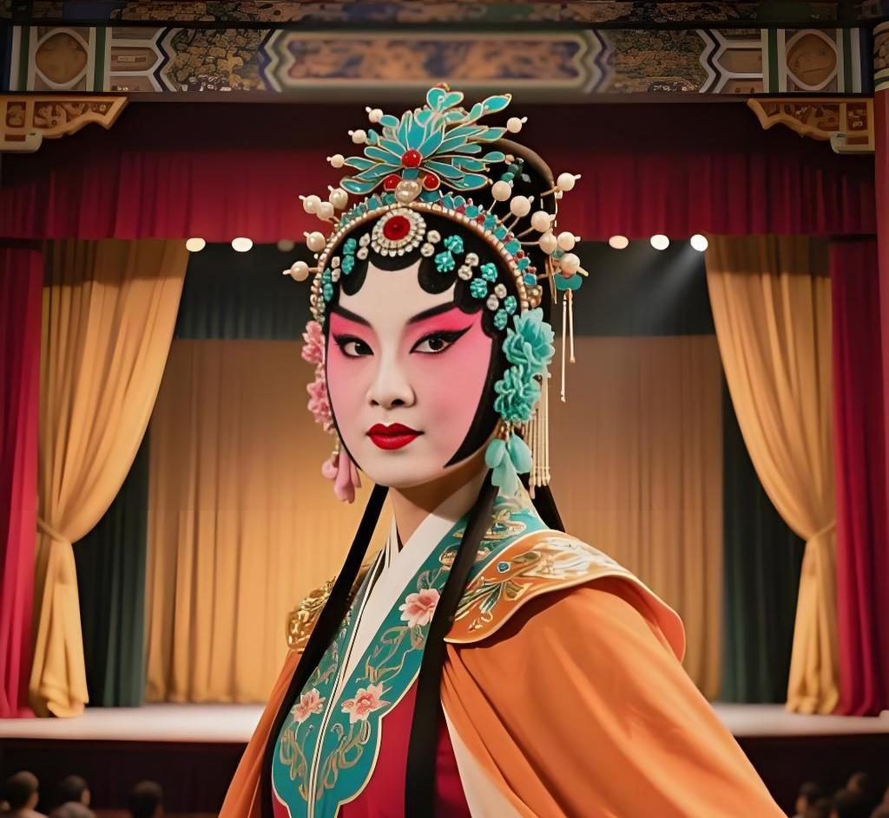

尚小云

尚小云（1900年1月7日－1976年4月19日），原名德泉，字绮霞，河北南宫人，著名京剧表演艺术家，尚派艺术创始人，“四大名旦”之一。
尚小云幼年进入戏曲学校学艺，初学武生，后改习青衣，14岁便声名鹊起。他功底深厚，文武兼备，嗓音高亢嘹亮，表演刚劲洒脱，在京剧旦行中独树一帜。
尚小云一生致力于京剧教育事业，创办荣春社，培养了大批京剧人才，桃李满天下。他为人豪爽，艺德高尚，被业内尊称为“尚先生”，对京剧传承与发展贡献卓著。
艺术特色
尚派艺术以**刚劲挺拔、高亢激越、潇洒大方**为鲜明特点，唱腔铿锵有力、气势磅礴，擅长演绎巾帼英雄、侠女烈妇类角色。尚小云武功功底极为扎实，身段矫健优美，动作干净利落，“武戏文唱、文戏武唱”，形成了阳刚大气、极具张力的艺术风格，在旦行中独领风骚。
代表剧目
- 《昭君出塞》：尚派代表作，身段唱腔气势恢宏
- 《失子惊疯》：做工精湛，情感爆发力极强
- 《乾坤福寿镜》：经典尚派剧目
- 《梁红玉》：巾帼英雄形象经典
- 《穆桂英》：武旦与青衣完美融合
- 《摩登伽女》：创新剧目，风格独特
艺术影响
尚小云创立的尚派艺术，以阳刚之美填补了京剧旦行的风格空白，成为四大名旦中极具特色的流派。他不仅艺术造诣高深，更倾尽心血办学育人，为京剧界培养了几代优秀演员。尚派的身段、唱腔、表演风格至今仍被广泛学习与传承。
返回名家列表